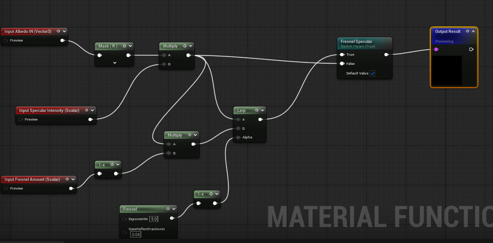
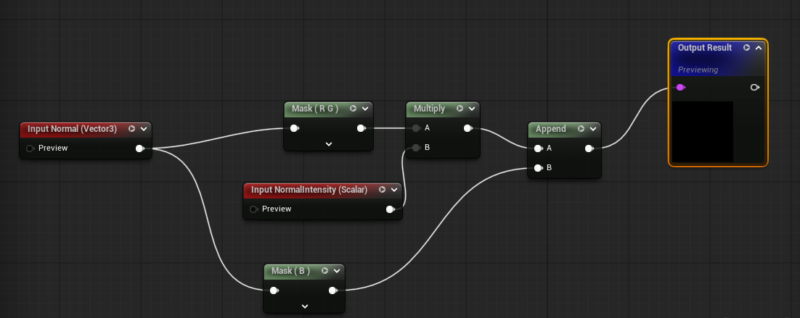
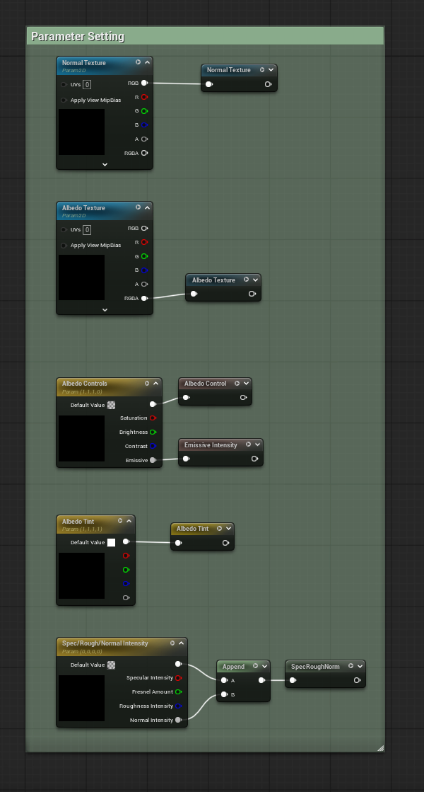
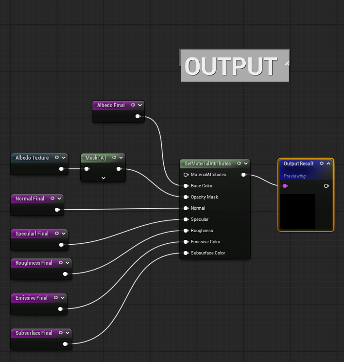

Week7
This is the documentation of pipeline from VAT to Unreal
HAVE COMPLETED:
TO-DO LIST:
-
Import Itim's animated tress from Houdini to Unreal
-
Work on shot 3 layout
-
Explore Grape Hyacinth, leaves and stem shader
This week, we have defined our shots. For the first shot, the leaves burst from the soil, and the soil should be Gaussian Splatting. Shot 3: Low angle to see the grape hyacinth; the grape hyacinth is blooming. Shot 4: The blooming animation transitions to a big scene, which was created by Gaussian Splatting.
This is the layout we explore this week. Below is the reference for that.

I also explored how to use Material Functions in Unreal Engine, allowing us to define parameters in the Master Material and override textures or adjust values within Material Instances.

This is inside MF_AlbedoControl Function: The graph is designed as a controllable color pipeline, allowing us to adjust saturation, tint, brightness, and contrast without changing the original texture.

This is inside MF_FresnelSpec Function: This graph combines specular intensity and fresnel effect to create controllable view-dependent surface highlights.

This is inside MF_Normal Function: The normal intensity is controlled by scaling the red and green channels while preserving the blue channel to maintain correct normal direction.

This is inside MF_Subsurface Function: This graph creates a flexible subsurface workflow by combining texture selection, color control, tint variation, and intensity adjustment.

This is MF_Plant Set: This graph is built as a modular master material with three stages: parameter setup, material processing, and final output. Adjustable controls such as albedo, normal, specular, roughness, emissive, and subsurface are processed independently through dedicated functions, then combined into the final material output. This structure makes the shader reusable and flexible for plant rendering in Unreal Engine.



This shows how I applied the master material to the leaves by creating a material instance and adjusting the parameters.
-
Convert the grape hyacinth into particles
-
Work on using PCG to layout Shot 3